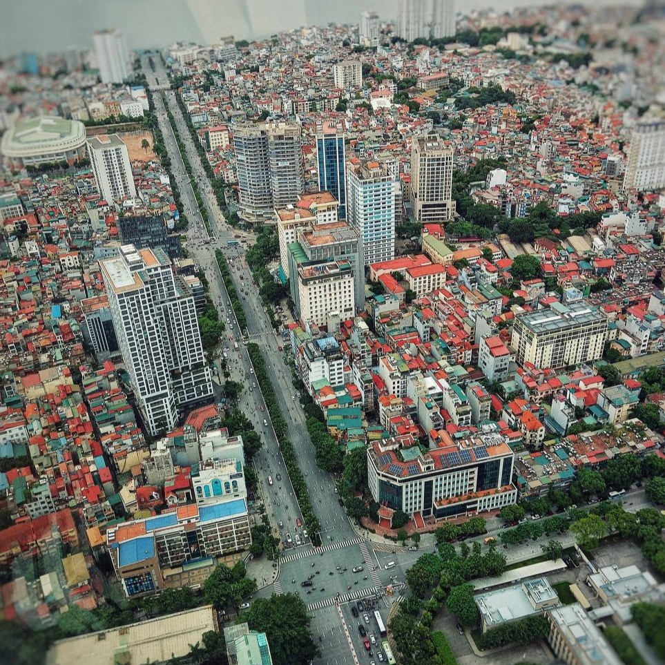

Gallery



About Me
Photography has been my passion since I was 10, capturing the world through my lens and telling stories one frame at a time. What started as a simple hobby has blossomed into a creative journey over the years, allowing me to explore various styles and techniques. From the vibrant hues of nature to the raw emotions in candid portraits, each photograph is a piece of art that reflects my unique perspective. Whether it’s the intricate details of macro photography or the expansive beauty of landscapes, my work aims to evoke emotions and inspire others.
Contact
If you would like to work with me or have any questions, feel free to reach out!